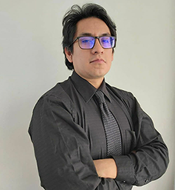
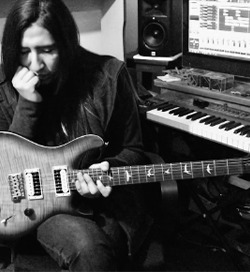
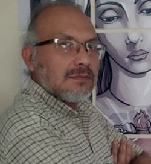
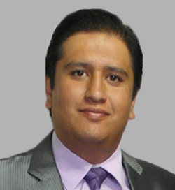
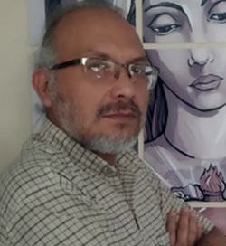
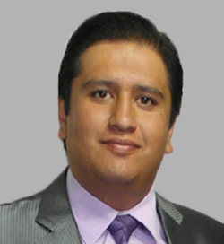
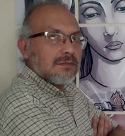
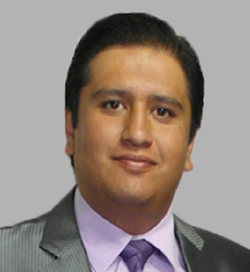

GALERIA DEL TECBA
El Tecnológico Boliviano Alemán cuenta con un plantel docente estrictamente seleccionado y altamente calificado dentro de los estándares del trabajo que compete la metodología de enseñanza SAETA. Actualmente el TECBA Subsede Sucre cuenta con 45 docentes tecnólogos, los cuales, además de ser profesionales jóvenes y de poseer una formación de alto grado académico y con un perfil de excelencia académica, cumplen con el perfil innovador, emprendedor y especialista que el TECBA toma como punta de la lanza para la educación integral de los estudiantes
IMAGENES DE LOS DOCENTES


 





El Proyecto Académico del TECBA cuenta con docente altamente calificados en Sucre y Santa Cruz, con la finalidad de formar tecnólogos superior, en el marco de la calidad educativa de las Technische Fachhochschulen (Universidades Tecnológicas Alemanas FH, suscribiendo el 17 de agosto de 2006 un Convenio de Cooperación, entre la Embajada de la República Federal de Alemania, representada por su Ministro Concejero Dr. Johannes Lehne y el TECBA para implementar en Bolivia el Programa-CTS (Ciencia, Tecnología y Sociedad). El Programa-CTS tiene por objetivo desarrollar un Sistema de Educación Superior, Investigación e Innovación en nuevas tecnociencias en Computación, Industria, Salud, Arquitectura, Comunicación y Empresas, facilitando la transferencia tecnológica a través de los siguientes módulos funcionales: